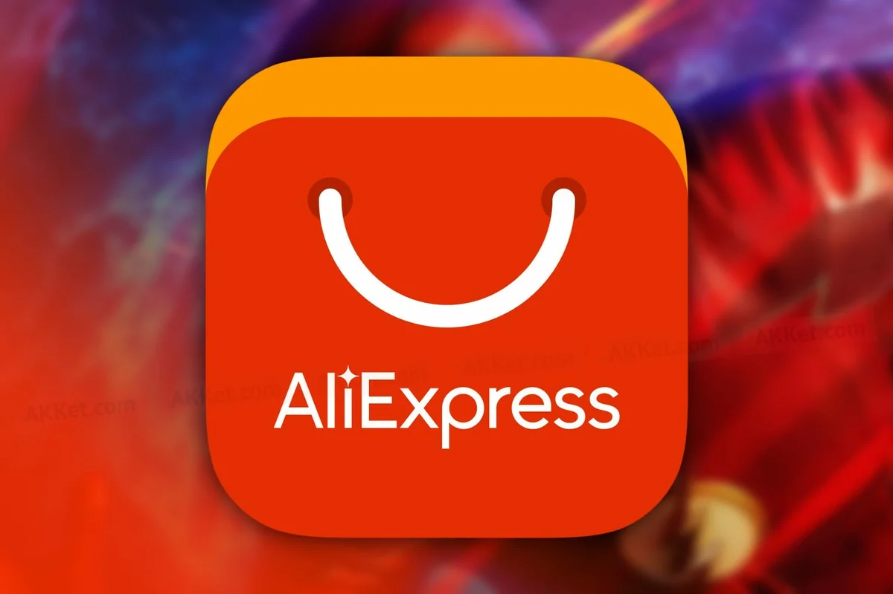

Довольно многие люди задаются вопросом о возможности экономии денег, которых людям
очень часто всё время мало. Если вы в их числе, то это статья для вас!
Секонд-хенд
Это невероятно избитая тема, но всё же я её упомяну. Всё же когда мы слышим это
слово, мы представляем себе магазины одежды. На практике данное понятие можно
отнести к огромному спектору вещей. Ежедневно в интернете на специальных платформах
вроде Юлы, Авито, Озон и т.д. появляется куча поношенных вещей.
И при этом даже если ноутбук после того, как принадлежал другому владельцу,
останется в заводском состоянии, то его цена запросто может упасть на 5-20%,
что при большой стоимости товара экономит кучу денег. А царапина на дне, не
влияющая на практическое применение может запросто снизить цену ещё на 10%.
Из выше приведённых платформ больше всего лично мне нравится Озон, у них
огромное количество подарочных бонусов и акций.
Разбор по пунктам, выбор оптимального
Давайте пройдёмся по всей схеме приобретения товара:
Прошлый владелец, перепродажа или завод
Доставка, посылка или окно заказов
Сборка или готовый товар
Установка(Необязательно)
Теперь поясню всё выше указанное. Путь вашего товара начинается с покупки у того,
перепродаст товар или продаст поношенный или продаст уже готовый. Секонд-хенд
основан на первом пункте. Второй пункт ещё один способ экономить деньги.
Например вы можете договориться с продающим поношенную вещь и встретится
где-нибудь, а можете воспользоваться доставкой, а можете отправить посылку или
забрать в специальном пункте назначения. Все варианты могут быть оптимальны для
разных ситуаций. Например последние три подрузамевают, что вы куда-то идёте и
что-то делаете. Если вам лень и деньги позволяют, можно воспользоваться доставкой.
Но если вам жалко денег, доставка в товарные пункты зачастую бесплатна или же
имеет достаточно низкую цену. Часто трудно совместить первый и третий пункты
экономии. Нужно понимать, что товар могут собрать на заводе, а некоторые заводы
выпускают детали и если располагать нужными знаниями, можно экономить на сборке
Например мебели или конструкторов, порой это экономит тысячу другую. А товар у
вас будет фактически новый. И последнее бывает нечасто и относится в основном к
электронике. Например купить компьютер недостаточно, нужно поставить туда
операционную систему, знание того, как это делается, заметно экономит деньги,
ведь иначе вы будете нанимать человека, который вам настроит новый компьютер.
Товары из Китая

Зачастую это не лучший из возможных вариантов и тем не менее никогда не стоит
забывать про китайские товары. Многие не доверяют китайскому качеству, но если
вам нужен дешёвый вариант, то Китай является ТОП-1 в производстве дешёвого
и годного для использования обывателем товара. Между делом зачастую китайское
качество оказывается довольно вменяемым, а наогда и чуть лучше других заграничных
и отечественных производителей. Крупнейшими магазинами китайских товаров являются
AliExpress и Joom.
На этом всё! Ждите и других публикаций на похожие темы!